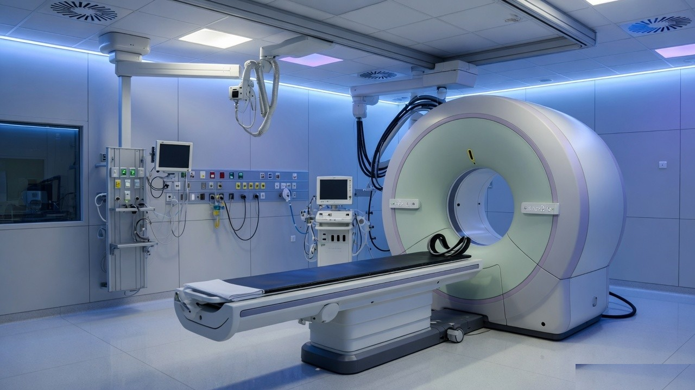

What this service covers
The radiology desk plans X-Ray, ultrasound and CT studies. A radiologist reviews the images and prepares the report. Please tell the team if you are pregnant or may be pregnant before any X-Ray or CT.
Tests and studies
- Digital X-Ray
- Ultrasound of abdomen and pelvis
- Obstetric ultrasound, as advised
- CT scan studies available at the centre
- Image report with films or digital copy
How to prepare
Abdomen ultrasound is usually done on an empty stomach. Pelvic ultrasound may need a full bladder. CT preparation depends on the study and whether contrast is used. The booking team confirms this before your visit.
Reports
X-Ray and ultrasound reports are usually ready the same day. CT reporting time is confirmed at booking.
Who usually books this
Patients referred for injury, pain, fever workup, pregnancy scans or follow-up of an earlier imaging study.
Test lists can change with the referral. The centre confirms availability, preparation and fees when you book.